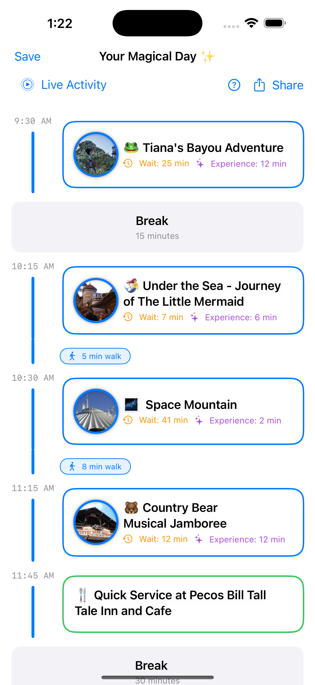

Theme Park Pro
2025 -



Theme Park Pro is an intelligent trip-planning app that helps users optimize their day at Theme Parks. I built it using SwiftUI and SwiftData for the iOS front end and integrated AdMob and Apple's subscription APIs to support both a free and premium experience. Users can browse parks, generate predictive wait time graphs, and create fully optimized schedules based on their preferences, all designed to minimize wait times and maximize enjoyment.
The real magic happens on the backend. I trained a suite of machine learning models using Python and sci-kit-learn, based on large datasets of historical wait times and real-world factors. Feature tuning was one of the hardest parts: figuring out which variables were predictive was a huge challenge. Once tuned, the server updates a prediction cache daily, and the app pulls that ML data to generate personalized schedules using an algorithm I wrote from scratch. Time zone handling across client, server, and APIs added a surprisingly tricky edge case to that flow.
Under the hood, the backend is a hybrid system: a Python-based ML service handles training and predictions, while a Node.js REST API connects the app to a MongoDB database for live and stored data. The app uses a real-time cache of external APIs to update insights as users move through their day in the park, helping guide them with up-to-date tips on what to do next.
This was my first app with deep backend architecture and a full subscription model, so I also learned a ton about server management and Apple's auto-renewing subscription flow. With Theme Park Pro+, users get unlimited schedules, an ad-free experience, and access to live activities.
I've always been a huge theme park fan, I love optimizing my own park days, but I know not everyone wants to spend hours planning. Theme Park Pro is my attempt to make expert-level planning accessible to anyone, and I'm especially proud of how accurate the predictions have become and how simple the UI makes the whole experience feel.